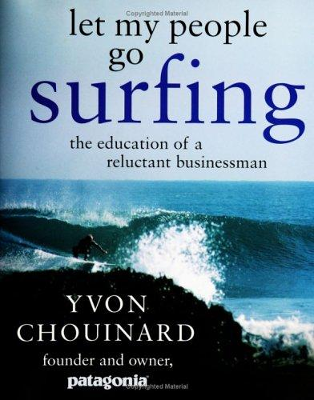

伊冯·乔伊纳德（Yvon Chouinard）是Patagonia公司的创始人，也是美国历史上最独特的企业家之一。他的身份首先是攀岩者、冲浪者和登山探险家，其次才是商人——而这个顺序，贯穿了他整个商业生涯的价值取向。1953年出生于魁北克的法裔加拿大家庭，青年时代的乔伊纳德以锻造和销售攀岩器具起家，逐步发展出户外服装与装备品牌Patagonia。《让我的员工去冲浪》于2005年由企鹅出版社出版，书名源自Patagonia公司的一项著名企业制度：当海浪好的时候，员工随时可以放下工作去冲浪，回来后再继续——这项制度折射的，是乔伊纳德对工作、生活与自然之间关系的根本信念。
本书既是乔伊纳德的个人回忆录，也是Patagonia公司哲学的完整表达。在商业层面，书中详细阐述了Patagonia在产品设计、供应链管理、员工福利、环境责任等各个维度上的实践理念。乔伊纳德始终拒绝将股东回报最大化作为公司的首要目标，转而将"制造最好的产品、不造成不必要的伤害、用商业来激励和实施对环境危机的解决方案"确立为公司使命。他在书中直言，一家真正对社会负责的企业，必须具备质疑自身存在对环境影响的勇气——Patagonia甚至在广告中公开呼吁消费者"不要买这件夹克"（Don't Buy This Jacket），鼓励减少消费、延长产品使用寿命。这种对消费主义的公开挑战，在商业史上极为罕见。
乔伊纳德的管理哲学与硅谷式的高增长叙事格格不入，却以另一种方式证明了价值观驱动的企业同样可以在市场中长期存活、且活得有尊严。"你知道得越多，你需要的就越少"（"The more you know, the less you need"），这句贯穿全书的格言，浓缩了乔伊纳德对消费与存在的理解。Patagonia的员工文化——弹性工作时间、公司资助的育儿设施、内部冲浪预警系统——在今天已被视为"有意义的工作文化"的早期蓝本，深刻影响了此后一代企业家对公司文化的想象。
2022年，乔伊纳德将Patagonia公司的全部股权捐赠给了一个专注于对抗气候变化的非营利信托，彻底兑现了他数十年来在书中表达的信念——公司的利润，终究应当服务于比利润本身更大的使命。《让我的员工去冲浪》不仅是一本商业传记，更是一份关于"企业为何而存在"的根本性叩问，尤其值得那些正在思考如何建立一家长久有价值的企业的创业者与投资者深读。